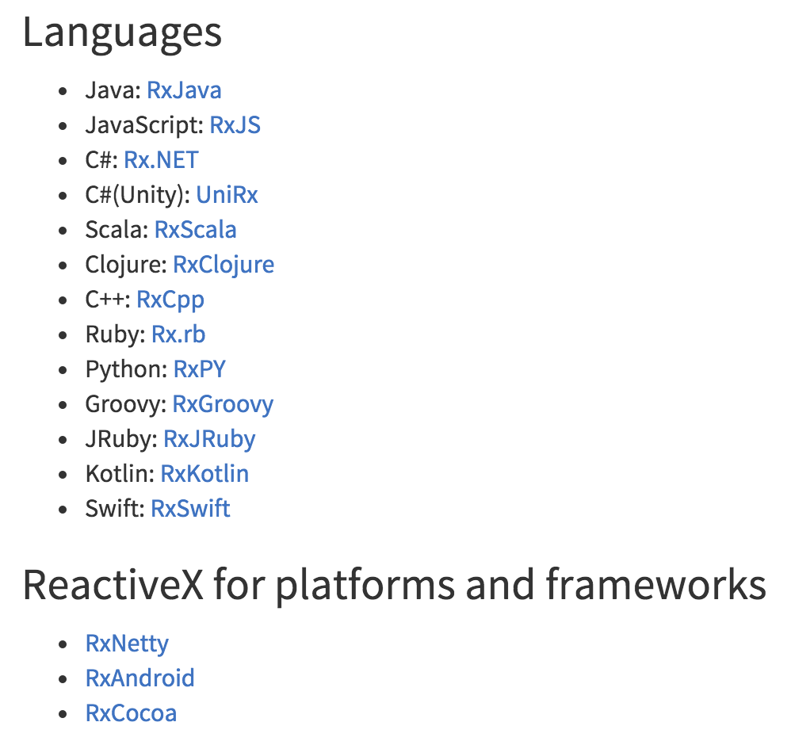
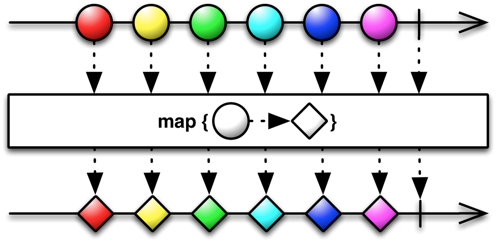
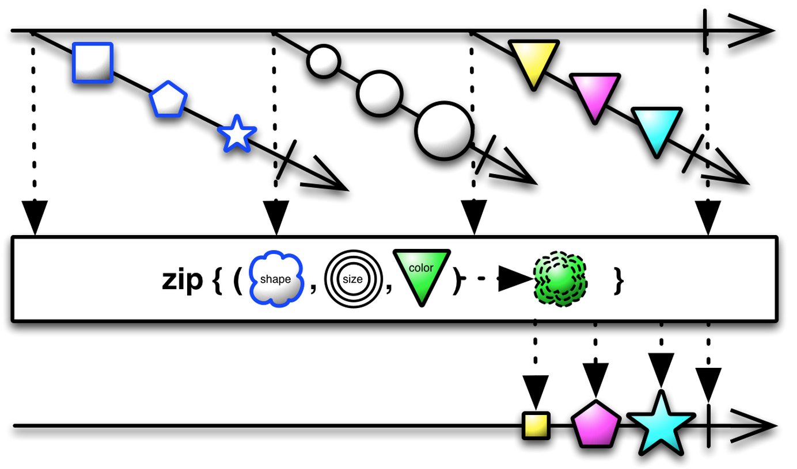

class: center, middle, dark background-image: url() # Reactive X .right.gary_light[[Wang Jie](http://github.com/wangjiegulu)] .middle[[Github](https://github.com/wangjiegulu)] .middle[[Blog](http://www.cnblogs.com/tiantianbyconan)] --- class: center, middle .center[] --- class: left, left ## 什么是[Reactive X](http://reactivex.io/)? .rfs[Reactive X]全称是"Reactive Extensions"，一般简写为.rfs[Rx]。 .rfs[Rx]是一个使用可观察数据流进行异步编程的编程接口，现在已经支持几乎全部的流行编程语言了。 .center[] --- ## 为什么使用[Reactive X](http://reactivex.io/)? -- 1.__观察者模式__ - 创建：.rfs[Rx]可以方便地创建事件流和数据流 - 组合：.rfs[Rx]使用查询式的操作符组合和变换数据流 - 监听：.rfs[Rx]可以订阅任何可观察的数据流并执行操作 -- 2.__简化代码__ - 函数式风格：对可观察数据流使用输入输出函数 - 简化代码：.rfs[Rx]的操作符通常可以将复杂的难题简化 - 异步错误处理：传统的.rfs[try/catch]没办法处理异步计算，.rfs[Rx]提供了合适的错误处理机制 - 轻松使用并发：.rfs[Rx]的.rfs[Observables]和.rfs[Schedulers]让开发者可以摆脱底层的线程同步和各种并发问题 --- ## 与传统编程范式的不同之处 .problem[需求：调用方法 _getMyPhone()_ 方法获取电话，然后拨打电话。] -- ###1. 传统编程范式： -- ```java Phone myPhone = getMyPhone(); myPhone.call(); ``` -- - 调用方法。 - 存储返回值到一个变量里。 - 使用这个变量来做一些事情 --- ###2. 在[Reactive X](http://reactivex.io/)中： -- ```java Observable.create(new Observable.OnSubscribe<Object>() { @Override public void call(Subscriber<? super Object> subscriber) { subscriber.onNext(getMyPhone()); subscriber.onCompleted(); } }) .subscribe(new Action1<Phone>() { @Override public void call(Phone myPhone) { myPhone.call(); } }, new Action1<Throwable>() { @Override public void call(Throwable throwable) {} }, new Action0() { @Override public void call() {} }); ``` -- - 定义一些方法来使用异步调用结果返回值来做一些事情，这些方法就被称为.rfs[Subscriber]（订阅者）。 - 定义一个异步调用来作为一个.rfs[Observable]。 - 通过订阅来绑定.rfs[Subscriber]到.rfs[Observable]上面。 - .rfs[Observable]返回的数据的时候继续你的业务处理。 --- ### 使用.rfs[lambda]表达式替换掉接口的实现 ```java Observable.create(subscriber -> { subscriber.onNext(getMyPhone()); subscriber.onCompleted(); }) .subscribe( myPhone -> myPhone.call(), throwable -> {}, () -> {} ); ``` --- ## [Reactive X](http://reactivex.io/)的组成部分 -- - __Observable__： >被订阅者，可以认为它是数据源或者事件源，一旦你订阅了它，它就会把数据排出给你（不同的.rfs[Observable]排出的数据可能是不同的）。 <br/> - __Subscriber__： >订阅者，用来接收从.rfs[Observable]排出的数据。 <br/> - __Operators__： >操作符，可以通过操作符来创建一个.rfs[Observable]；可以对一个或者多个.rfs[Observable]排出数据进行变换、过滤、组合等等操作，然后再排出给.rfs[Subscriber]。 --- ## Reactive X的组成部分之（.rfs[Subscriber]） .rf[ 订阅者，用来接收从Observable排出的数据。 ] 一旦Subscriber订阅了一个.rfs[Observable]，则.rfs[Subscribe]有3个方法可以被回调： - __onNext__ >当.rfs[Observable]排出数据给这个.rfs[subscriber]时，.rfs[subscriber]可以在这个方法中接收到数据 - __onError__ > 当.rfs[Observable]生成数据或者排出数据出现异常，则这个方法会被调用；.rfs[subscriber]可以在这个方法中处理异常 - __onCompleted__ > 当.rfs[Observable]数据全部排除后，则这个方法会被调用；.rfs[subscriber]可以在这个方法中做一些收尾工作 --- ## Reactive X的组成部分之（.rfs[Observable]） .rf[ 被订阅者，可以认为它是数据源或者事件源，一旦你订阅了它，它就会把数据排出给你（不同的Observable排出的数据可能是不同的）。 ] Observable分为 .rfs[Hot Observable]和 .rfs[Cold Observable]。 - __Hot Observable__ >.rfs[Hot Observable]会在它被创建的时候马上开始排出，所以，后来订阅的subscriber可能会接收到的是中间开始的数据； - __Cold Observable__ >.rfs[Cold Observable]则会一直有观察者订阅它才会排出，并且保证每个订阅者收到的数据都是完整的。； Reactive X采用的是.rfs[Cold Observable]。 --- ## Reactive X的组成部分之（.rfs[Observable]） ### 创建一个.rfs[Observable] 创建一个.rfs[Observable]有12种方式，都比较常用，这里介绍两种； 注意：创建.rfs[Observable]的方式都是使用操作符.rfs[Operator]来实现的，.rfs[Operator]稍后会讲到 - __Create__ >.rf[ 使用create操作符创建一个Observable，需要在这个操作符中传入一个方法，这方法代表这个Observable的行为，可以在里面调用onNext，onError，onCompleted。 ] --- ```java Observable.create(new Observable.OnSubscribe<Integer>() { @Override public void call(Subscriber<? super Integer> subscriber) { try { for (int i = 0; i < 3; i++) { subscriber.onNext(i); } } } catch (Exception e) { subscriber.onError(e); } } }) .subscribe(new Subscriber<Integer>() { @Override public void onNext(Integer item) { System.out.println("Next: " + item); } @Override public void onError(Throwable error) { System.err.println("Error: " + error.getMessage()); } @Override public void onCompleted() { System.out.println("Sequence complete."); } }); ``` --- ```java Observable.create(subscriber -> { try { for (int i = 0; i < 3; i++) { subscriber.onNext(i); } subscriber.onCompleted(); } catch (Exception e) { subscriber.onError(e); } }) .subscribe( item -> System.out.println("Next: " + item), // onNext throwable -> System.err.println("Error: " + error.getMessage(), // onError System.out.println("Sequence complete.") // onCompleted }); ``` 结果： ``` Next: 0 Next: 1 Next: 2 Sequence complete. ``` --- ## Reactive X的组成部分之（.rfs[Observable]） ### 创建一个.rfs[Observable] - [__From__](http://reactivex.io/documentation/operators/from.html) >.rf[ from操作符可以通过future、集合、数组来创建一个Observable。 如果是通过集合或者数组来创建的，Observable结果会排放集合或者数组的所有的item。 ] --- ```java List<Integer> dataList = new ArrayList<>(); dataList.add(0); dataList.add(1); dataList.add(2); Observable.from(dataList) .subscribe(new Subscriber<Integer>() { @Override public void onCompleted() { System.out.println("Sequence complete."); } @Override public void onError(Throwable error) { System.out.println("onError: " + error.getMessage()); } @Override public void onNext(Integer item) { System.out.println("Next: " + item); } }); ``` 结果： ``` Next: 0 Next: 1 Next: 2 Sequence complete. ``` --- ## Reactive X强大的操作符（.rfs[[Operators](http://reactivex.io/documentation/operators.html)]） .rf[ 操作符才是Reactive X真正强大之处（.red[常用74个，总共390个]-.-），通过操作符，可以对数据进行各种变换、过滤、组合等操作，然后排除数据给subscriber ] .rfs[[Operators](http://reactivex.io/documentation/operators.html)]可分为： - __创建操作__：用来创建.rfs[Observable] - __变换操作__：对.rfs[Observable]发射的数据进行变换；比如映射、分组、扫描等 - __过滤操作__：从.rfs[Observable]发射的数据中进行选择；比如去重、取样等 - __组合操作__：多个.rfs[Observable]组合成一个.rfs[Observable] - __错误处理__：从错误通知中恢复；比如重试 - __辅助操作__：比如延迟排出数据，指定.rfs[Observable]或者.rfs[Subscriber]工作线程等 - __条件和布尔操作__：对.rfs[Observable]或者排出的数据进行判断 - __算术和聚合操作__：进行运算 ... --- ## Reactive X强大的操作符（.rfs[[Operators](http://reactivex.io/documentation/operators.html)]） 简单介绍几个最常用的.rfs[[Operators](http://reactivex.io/documentation/operators.html)] 1. [__Map__](http://reactivex.io/documentation/operators/map.html) >在.rfs[Observable]排出数据之后，可以用Map操作符来对数据类型进行转换或者改变原来传递的数据。 .center[] --- 1. [__Map__](http://reactivex.io/documentation/operators/map.html) ``` Observable.create(subscriber1 -> { subscriber1.onNext(10); subscriber1.onCompleted(); }) .map(integer -> "After map..." + String.valueOf(integer)) .subscribe(result -> { System.out.println("Next: " + result); }); ``` == ```java Observable.just(10) .map(integer -> "After map..." + String.valueOf(integer)) .subscribe(result -> { System.out.println("Next: " + result); }); ``` 结果： ``` Next: After map...10 ``` --- ## Reactive X强大的操作符（.rfs[[Operators](http://reactivex.io/documentation/operators.html)]） 2.[__SubscribeOn__](http://reactivex.io/documentation/operators/subscribeon.html) 和 [__ObserveOn__](http://reactivex.io/documentation/operators/observeon.html) - [__SubscribeOn__](http://reactivex.io/documentation/operators/subscribeon.html)：用于指定Observable应该在哪个调度程序上执行 - [__ObserveOn__](http://reactivex.io/documentation/operators/observeon.html)：用于指定观察者观察Observable的调度程序 ```java Observable.create(subscriber1 -> { subscriber1.onNext(10); // 子线程, subscribeOn决定 subscriber1.onCompleted(); // 子线程, subscribeOn决定 }) .subscribeOn(Schedulers.newThread()) .map(integer -> "After map..." + String.valueOf(integer)) // 取决于上面是哪个线程 .observeOn(AndroidSchedulers.mainThread()) .doOnNext(() -> System.out.println("doOnNext...")) // 取决于上面是哪个线程 .subscribe(result -> { // 主线程, observeOn决定 System.out.println("Next: " + result); }); ``` 结果： ``` doOnNext... Next: After map...10 ``` --- ## Reactive X强大的操作符（.rfs[[Operators](http://reactivex.io/documentation/operators.html)]） 3.[__Zip__](http://reactivex.io/documentation/operators/zip.html) >组合多个.rfs[Observable]排出的数据，然后通过一个给定的函数进行转换成新的数据，然后把新的数据排出给订阅者 .center[] --- .problem[ 需求：从本地数据库中的不同表中获取patientId和token，一起输出patientId和token ] ```java // 创建一个Observable，从数据库中获取patientId Observable<Long> patientIdObservable = Observable.create(subscriber -> { subscriber.onNext(queryPatientIdFromDb()); // 子线程，取决于subscribeOn subscriber.onCompleted(); }) .subscribeOn(Schedulers.newThread()) // 指定在子线程中执行数据的查询 // 创建一个Observable，从数据库中获取token Observable<String> tokenObservable = Observable.create(subscriber -> { subscriber.onNext(queryTokenFromDb()); // 子线程，取决于subscribeOn subscriber.onCompleted(); }) .subscribeOn(Schedulers.newThread()) // 组合两个Observable Observable.zip(patientIdObservable, tokenObservable, (patientId, token) -> { return "patientId: " + patientId + ", token: " + token; } ) .subscribe(result -> System.out.println("retuls: " + result)); ``` 结果： ``` patientId: 123456, token: xxxxxxxxxxxxxxxxxxxxxxxxxxxxxxxx ``` --- .problem[ 需求：实现连续在按钮上点击3次以上则Toast出点击的次数。 .red[注意：只有任意两次点击小于1000毫秒才算是连续] ] ### 如果不使用.rfs[Rx]： -- - 记录每次点击的时间 - 记录当前有多少次有效的点击事件 - 如果每次点击时间1000ms内没有再次被点击，判断当前有效点击次数是否大于2，如果是则提示，然后并把当前有效点击次数置0；如果1000ms内被再次点击了，则当前有效点击次数＋1 - WTF。。。 --- ```java Subject<String, String> clickSubject = PublishSubject.create(); clickSubject = PublishSubject.create(); clickSubject .buffer(clickSubject.throttleWithTimeout(1000, TimeUnit.MILLISECONDS)) .map(List::size) .filter(integer -> integer > 2) // 忽略连续1次和2次点击 .observeOn(AndroidSchedulers.mainThread()) .subscribe(clickCount -> { toast.setText("点击了" + clickCount + "次"); toast.show(); }, throwable -> { Log.e(TAG, "throwable..." + throwable); }, () -> { Log.d(TAG, "completed..."); }); ``` onClickListener中： ```java @AIClick({R.id.activity_rx_java_btn}) public void onClick(View view) { switch(view.getId()){ case R.id.activity_rx_java_btn: clickSubject.onNext("clicked" + System.currentTimeMillis()); break; default: break; } } ``` --- ## 杏仁医生（患者版）中.rfs[Reactive X]的应用 患者端App架构（.rfs[MVP]） - __Activity__（.rfs[View]层）：刷新UI、事件派发（点击、长按等） - __Presenter__（.rfs[Presenter]层）：执行请求（调用.rfs[Interactor]）并回调Activity刷新UI - __Interactor__（.rfs[Model]层）：业务逻辑和数据 --- ### 1. 聊天界面查询数据库并刷新UI显示聊天列表 - .rfs[DAO]层数据库查询.blue[afterCreatedTime]这个时间之后的与某医生的所有消息： ```java @Override public List<DoctorMessage> queryMessagesAfter(Long doctorId, Long afterCreatedTime, int limit) throws Exception { // 参数检查等无关代码省略 return queryBuilder() .setWhere( Where.and( Where.or( Where.and( Where.eq(DoctorMessage.COLUMN_FROM, doctorId), Where.eq(DoctorMessage.COLUMN_TO, patientId) ), Where.and( Where.eq(DoctorMessage.COLUMN_FROM, patientId), Where.eq(DoctorMessage.COLUMN_TO, doctorId) ) ), Where.gt(DoctorMessage.COLUMN_CREATED, afterCreatedTime) ) ) .addOrder(DoctorMessage.COLUMN_CREATED, false) .addOrder(DoctorMessage.COLUMN_DELIVER_ID, false) .setLimit(limit) .query(this); } ``` --- ### 1. 聊天界面查询数据库并刷新UI显示聊天列表 - .rfs[Interactor]中调用.rfs[DAO]层获得数据并封装成.blue[ViewModel]返回给.rfs[Presenter] ```java public Observable<List<ChatMessageViewModel<DoctorMessage>>> queryMessagesAfter(Long doctorId, Long afterCreatedTime, int limit) { return Observable.defer( () -> Observable.from(getDao().queryMessagesAfter(doctorId, afterCreatedTime, limit)) ) .observeOnDb() .map(doctorMessage -> { ChatMessageViewModel<DoctorMessage> chatMessageViewModel = new ChatMessageViewModel<>(); chatMessageViewModel.setObj(doctorMessage); chatMessageViewModel.setIsReceive(ABTextUtil.isEquals(doctorMessage.getTo(), currentPatientId)); return chatMessageViewModel; }) .observeOnMain() .toList(); } ``` --- ### 1. 聊天界面查询数据库并刷新UI显示聊天列表 - .rfs[Activity]调用.rfs[Presenter]中执行本地数据库查询： ```kotlin fun queryMessagesAfter(doctorId: Long?, afterCreatedTime: Long?) { // 调用相应的Interactor查询数据库 interactor<DoctorMessageInteractor>() .queryMessagesAfter(doctorId, afterCreatedTime, 20) .observeOnMain() .doOnNextOrError { isQueryingAfterMessages = false } .subscribeSafeNext { viewer.onQueryMessagesAfter(it) } .bindPresenter(this) } ``` --- ### 2. 来消息时自动刷新主页上tab的小红点 .rf[ 思路是使用Reactive X实现.blue[RxBus]事件总线，具体代码可见： http://www.cnblogs.com/tiantianbyconan/p/4578699.html ] 大致实现思路： - 提供.rfs[register()]方法来注册订阅的事件以及订阅者 - 提供.rfs[unregister()]方法来反注册订阅的事件以及订阅者 - 使用.rfs[Subject]来保存所有的事件订阅 - 使用.rfs[post()]方法来排出事件 --- ### 2. 来消息时自动刷新主页上tab的小红点 - 在主页面注册一个.rfs[Observer] ```java Observable<String> flagObservable = RxBus.get() .register(DoctorMessage, DoctorMessage.class); flagObservable.observeOn(AndroidSchedulers.mainThread()) .subscribe(doctorMessage -> { // 刷新小红点数字 refreshMessageCountFlag(); }); ``` - 在.rfs[WebSocket]收到.rfs[DoctorMessage]时自动post一个数据 ```java RxBus.get().post(doctorMessage); ``` --- ### 2. 来消息时自动刷新主页上tab的小红点 .rf[使用注解的方式注册.blue[Subject]] - 任意编写一个方法，然后。。。等回调就可以了 ```java @Accept public void onPostAccept(Object tag, DoctorMessage rxEvent) { // 刷新小红点数字 refreshMessageCountFlag(); } ``` - 在.rfs[WebSocket]收到.rfs[DoctorMessage]时自动.rfs[post]一个数据 ```java RxBus.get().post(doctorMessage); ``` --- class: center, middle #That's all.